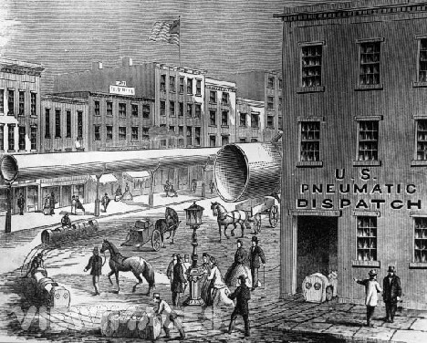

Saturday, May the 2nd, 2009
back to: title, date or indexes
We would all be well advised to familiarise ourselves with this brief illustrated history of pneumatic tubes, for reasons which I trust are crystal clear.
